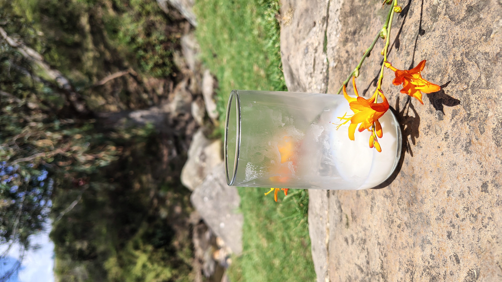
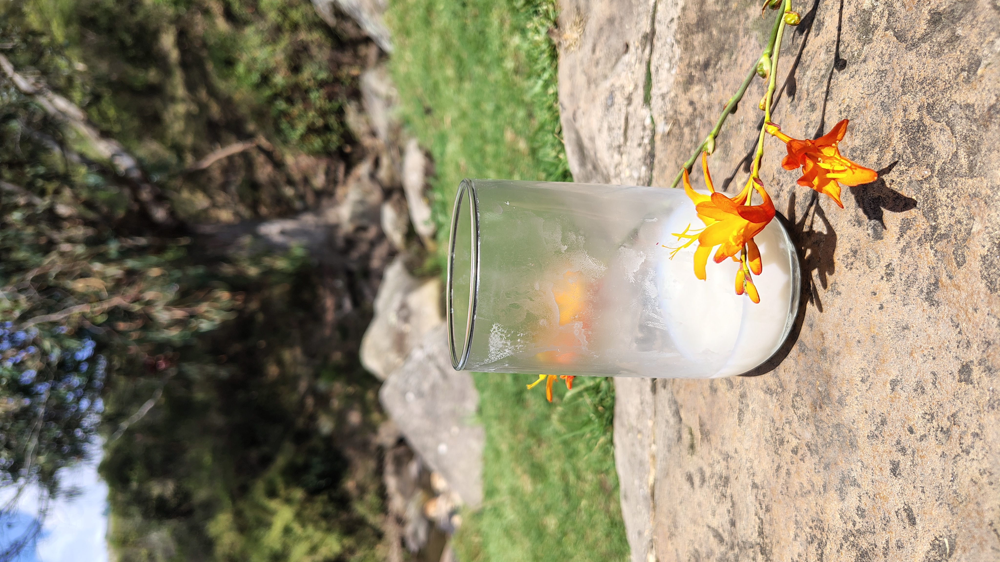

MACAM es proyecto multimedia dedicado a dignificar y visibilizar el arduo trabajo de los lecheros. Inspirada en las manos trabajadoras que sostienen el campo, MACAM busca generar reconocimiento y fomentar el valor que reciben por su labor.


Posicionar a MACAM como una iniciativa clave en la visibilización del trabajo de los ganaderos lecheros, destacando su esfuerzo y el valor de su labor.
Crear contenido que humanice a los ganaderos, resaltando sus historias de vida, sacrificios y la importancia de su trabajo para la sociedad.

Educar al público sobre la realidad económica de los ganaderos, enfatizando la brecha entre su esfuerzo y la remuneración que reciben.
Fomentar la interacción y el apoyo en redes sociales mediante contenido participativo, encuestas, testimonios y llamados a la acción.

El recetario de MACAM visibiliza la labor ganadera desde la cocina, con 20 recetas tradicionales donde la leche es protagonista. Acompañado por Mayita, una vaquita entrañable que guía cada página, este recetario combina sabor, memoria y ternura en un diseño pensado para toda la familia.
“Manos que Inspiran” es un documental realizado por MACAM que narra la vida de Don José, un lechero de Usme Pueblo, cuyo trabajo encarna la resistencia, la memoria y el amor por la tierra. A través de una mirada íntima y sensible, esta pieza audiovisual visibiliza el conocimiento campesino y rinde homenaje a quienes alimentan al país con sus manos.
¿Tienes una receta especial que deseas compartir con el mundo? ¡Este es el lugar perfecto para hacerlo! Envíanos tu receta y podrías verla publicada en nuestra revista.
Términos y Condiciones de Uso del Formulario MACAM
1. Finalidad del Formulario:
Este formulario tiene como propósito recoger información, comentarios, aportes y/o recetas
tradicionales por parte del público interesado en el proyecto MACAM. Los datos recolectados
podrán ser utilizados como parte del recetario digital, publicaciones audiovisuales, piezas gráficas o
plataformas digitales asociadas a MACAM.
Tratamiento de Datos Personales
Tratamiento de Datos Personales
Los datos proporcionados, como su nombre, correo electrónico y cualquier otro campo de carácter
personal, serán tratados con confidencialidad y únicamente con fines relacionados con el proyecto.
En ningún caso serán vendidos ni compartidos con terceros no vinculados a MACAM.
Cesión de Derechos de Uso de Contenido
Al enviar el formulario, usted declara que la información, testimonios o recetas compartidas son de
su autoría o cuentan con autorización para su divulgación. Usted autoriza a MACAM a utilizar
dichos contenidos en medios digitales o impresos sin requerir un pago o compensación adicional.
Almacenamiento y Protección
Los datos recolectados se almacenarán en medios digitales seguros y solo tendrán acceso los
miembros responsables de la administración del proyecto MACAM.
Modificaciones
MACAM se reserva el derecho de modificar este documento en cualquier momento. Las
actualizaciones se publicarán en el sitio web y se aplicarán desde el momento de su publicación.
Contacto
Para ejercer derechos relacionados con sus datos (acceso, rectificación, eliminación), o si tiene
preguntas sobre el tratamiento de la información, puede escribirnos a:
m4c4m24@gmail.com
Aceptación
Al marcar la casilla correspondiente en el formulario y enviarlo, usted manifiesta que ha leído,
comprendido y aceptado estos términos y condiciones
Última actualización: 04 de July de 2025

Somos una productora especializada en comunicación audiovisual que crea contenido de alto impacto como cortometrajes, web. Nos enfocamos en conectar profundamente con nuestros podcasts, piezas publicitarias (reels, posts, anuncios) y páginas innovadoras que respondan a las necesidades reales de la clientes, explorar nuevas tendencias y ofrecer soluciones tecnología para transformar la forma en que las marcas comunican sociedad. Creemos en el poder de las ideas, la creatividad y la su mensaje.
Crear experiencias multimediales que conecten emocionalmente con las audiencias, ofreciendo soluciones audiovisuales innovadoras, funcionales y creativas para marcas, organizaciones y comunidades que buscan comunicar de manera auténtica en un entorno digital en constante evolución.
Desarrollar una plataforma creativa audiovisualv orientada a la producción de contenidos innovadores y personalizados, que integren nuevas tendencias narrativas, tecnologías digitales y estrategias de comunicación para conectar de forma auténtica con diferentes audiencias.
Ser una productora multimedial de referencia en el ámbitoaudiovisual y digital, reconocida por su capacidad de innovar, adaptarse a las tendencias emergentes y contar historias que generen impacto, construyendo puentes entre las ideas y las personas a través de narrativas transmedia.
Guionista e investigadora
Realicé los procesos de investigación necesarios para sustentar el contenido del proyecto y
participé en la redacción de guiones y textos informativos. Mi objetivo fue aportar solidez
conceptual y claridad comunicativa en todos los materiales producidos.
Sonidista y guionista
Me encargué del diseño y edición sonora del proyecto, así como de la creación de guiones.
Mi trabajo se centró en lograr una narrativa sonora clara, emotiva y coherente con los
objetivos comunicativos del proyecto.
Directora de arte y diseñadora gráfica
Desarrollé las piezas gráficas e ilustraciones que conforman el componente visual de MACAM.
Como directora de arte, trabajé en la ambientación estética de los espacios y en la construcción
visual del personaje ilustrado del proyecto.
Directora general de MACAM
Me encargo de la dirección general del proyecto. Dentro de mis funciones están la edición,
montaje audiovisual y la gestión de contenidos para redes sociales. También desempeño el
rol de community manager, asegurando una comunicación coherente y visualmente atractiva para
nuestra comunidad.
Directora de cámara y diseñadora gráfica
Diseñé la identidad visual del proyecto por medio de ilustraciones originales y dirigí la cámara
durante los procesos de grabación. Mi responsabilidad fue construir el universo visual de MACAM
y registrar cada momento clave del proceso.
Productor del proyecto
Como productor, desarrollé la página web de MACAM y estuve a cargo de la postproducción general.
Mi labor consistió en integrar los distintos componentes del proyecto, garantizando su
funcionalidad técnica y estética final.